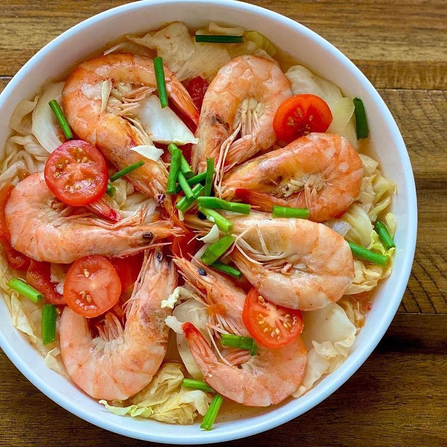

Odin's Recipes

Welcome to the World of Cooking
Explore a delightful culinary journey where flavors dance, ingredients harmonize, and creativity knows no bounds. From comforting classics to exotic delights, our recipe collection celebrates the art of cooking. Whether you’re a seasoned chef or a kitchen novice, this is your sanctuary—a place to savor, experiment, and share the joy of food.

Recipes to Choose From
Adobo
Serve adobo with steamed rice and enjoy the robust flavors.
Mechado
Serve mechado with steamed rice or crusty bread for a satisfying meal.
Sinigang
Enjoy sinigang piping hot with a side of steamed rice.